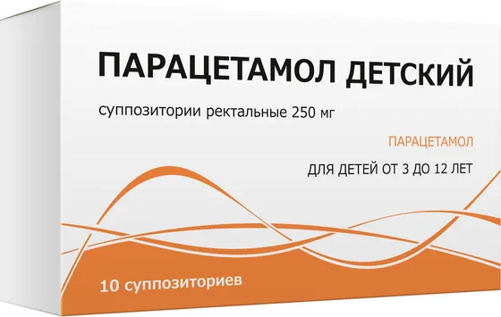

Парацетамол детский, 250мг
Суппозитории ректальные 250мг №10
- Группа
- Суппозитории
- Форма выпуска
- Суппозитории ректальные 250мг №10
- Производитель
- ООО «Тульская фармацевтическая фабрика», Россия
Информация носит справочный характер. Перед применением прочитайте инструкцию и проконсультируйтесь со специалистом.
Инструкция по применению
01Фармакотерапевтическая группа
Анальгезирующее ненаркотическое средство.
02Состав
Состав на один суппозиторий:
Действующее вещество: парацетамол - 250мг.
Вспомогательное вещество: твердый жир (Витепсол, Суппосир) – достаточное количество, до получения суппозитория массой 1250.0мг.
03Показания к применению
Применяют у детей с 3-х месяцев до 12 лет в качестве:
- жаропонижающего средства при острых респираторных заболеваниях, гриппе, детских инфекциях, поствакцинальных реакциях и других состояниях, сопровождающихся повышением температуры тела;
- болеутоляющего средства при болевом синдроме слабой и умеренной интенсивности, в том числе: головной и зубной боли, боли в мышцах, невралгии, боли при травмах и ожогах.
У детей от 1 до 3 месяцев возможен однократный прием препарата для снижения температуры после вакцинации, применение препарата по всем показаниям возможно только по назначению врача.
04Способы применения
Ректально. После самопроизвольного опорожнения кишечника или очистительной клизмы, суппозиторий освобождают от контурной ячейковой упаковки и вводят в прямую кишку. Дозировка препарата рассчитывается в зависимости от возраста и массы тела, в соответствии с таблицей. Разовая доза составляет 10-15мг/кг массы тела ребенка. 2-3 раза в сутки, через 4-6 часов. Максимальная суточная доза парацетамола не должна превышать 60мг/кг массы тела ребенка.
Возраст | Вес | Разовая доза |
1 -3 месяца | 4-6 кг | 1 суппозиторий по 50мг |
3-12 месяцев | 7-10 кг | 1 суппозиторий по 100мг |
1 -3 года | 11 -16 кг | 1-2 суппозитория по 100мг |
3-10 лет | 17-30 кг | 1 суппозиторий по 250мг |
10-12 лет | 31-35 кг | 2 суппозитория по 250мг |
Длительность курса лечения: 3 дня в качестве жаропонижающего и до 5 дней, как обезболивающего средства. Продление курса при необходимости после консультации с врачом.